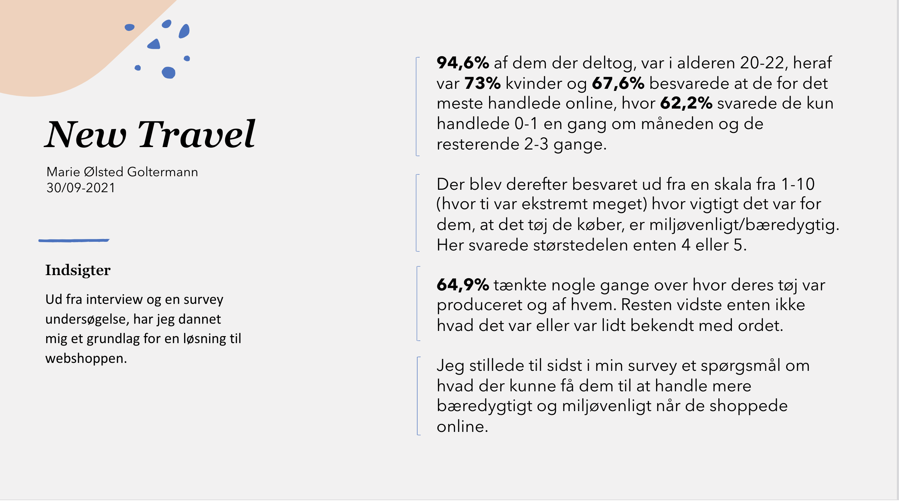
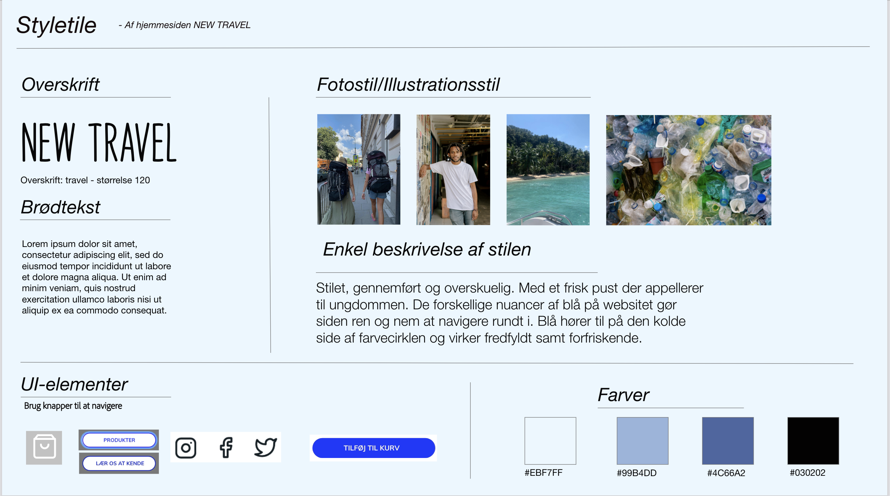
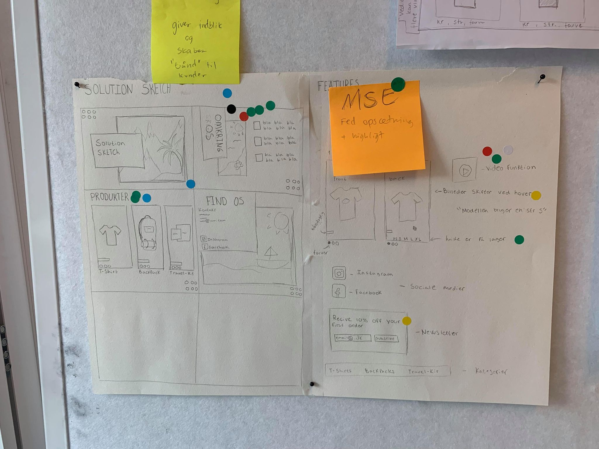
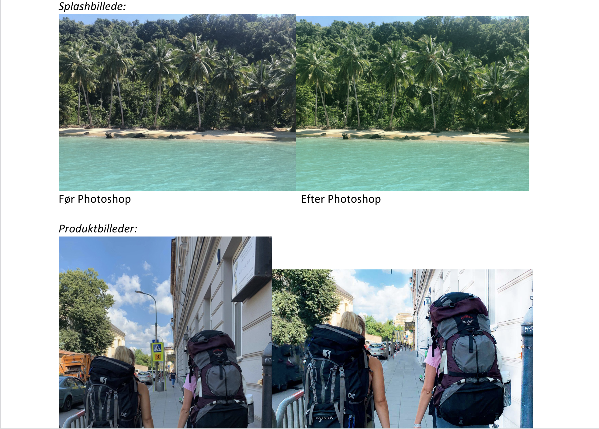
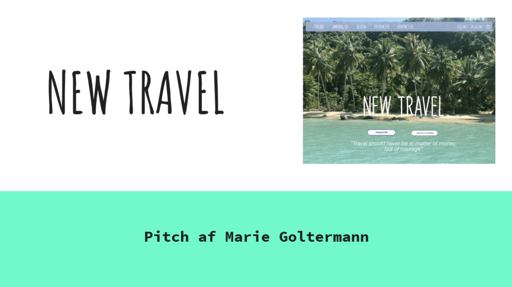
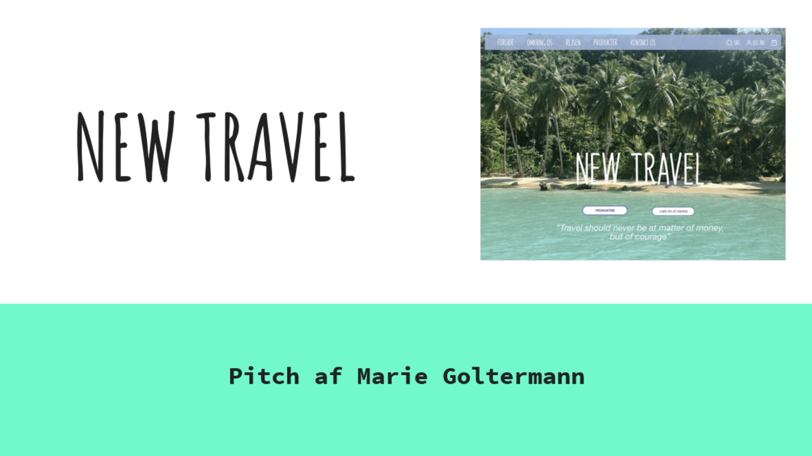

1. fase
Koncept, research og idé
I den første fase startede vi med Desk research som handler
om at indsamle viden og indsigter fra materiale der allerede er
tilgængelig på nettet. En metode, der ofte er oplagt at bruge i den
tidlige designfase, da man ofte her har brug for at afsøge et
område, før man selv udvikler researchmetoder. Her er det vigtigt at
man forholder sig kildekritisk.
Herefter benyttede jeg mig først af
research metoden interview, som er en kvalitativ metode, hvor
man opnår personens følelser, oplevelser, holdninger osv.
Sammenligner man denne metode med ”spørgeskema”-metoden opnår man
med interview et mere detaljeret og dybdegående svar.
Jeg uarbejdede en survey i google forms, som har til
formål at indhente kvantitative data om populationer gennem
besvarelse af række spørgsmål. Ud fra interview og survey
undersøgelse databehandlede jeg mine svar og dannede et
grundlag for en løsning til webshoppen. Herunder afsender,
målgruppe, usp, produkter og løsning.
- Google forms -
Se opgaver
Koncept
Moodboard

styletile
2. fase
Prototype, copy og fotos
I anden fase startede ide-fasen ved hjælp af
design sprint sketch. Her fandt jeg inspiration på nettet og
udvalgte 3 produkter til min webshop. En t-shirt, rygsæk og
rejse-kit. Jeg arbejde med The Four-Step Sketch som er:
Notes(individuel, Ideas (individuel, Crazy 8s (individuel) og
Solution sketch (individuel).
Herefter stod det på UI, konventioner og prototyping.
Her blev jeg klogere på
informationarkitektur, user interface, konventioner,
indholdskomponenter(globale og lokale), UI design og
prototyping. Ved hjælp af Informationsarkitektur, startede jeg med et sitemap,
visualiserede selve sidernes hieraki. Herefter et flowchart,
som viser hvordan brugeren udfører en opgave, trin fortrin i et
diagram. Jeg opbuggede dernæst et wireframe for at
visualiserer sites indholdselementer (billeder, navigation,og
tekst) placering på de forskellige sider.
Næste step var at UI interface, som er
brugergrænsefladen brugerne navigerer på, mens UI-design er
processen omkring visualisering og udvikling af brugergrænseflader.
Jeg brugt microcopying som bliver brugt til at guide brugere
og hjælpe dem med at interagere med produktet/hjemmesiden.
I web sammenhænge er konventioner de standarder som gennem
tiden er opstået, for placering (og brugerens forståelse) af
navigationselementer. Det vil sige at jeg fandt ud af de
globale indholdskomponenterer som skulle gå igen alle sider,
og de lokale som skulle optræde lokalt, på de enkelte sider.
Heraf kiggede jeg på UI design patterns, som viser hvordan andre
designere har arbejdet med forskellige områder inden for UI-design,
dette inspirerede mig til at gøre brugeroplevelsen bedre på mit
site.
Til min foto og stil kiggede jeg først på mit
moodboard, herefter et styletile (ses i fase 1). Det
var vigtig for mig at mine billeder afspejlede humøret og temaet på
mit site og for at skabe opmærksomhed. Jeg implementerede et
splashbillede og produktbilleder., som jeg redigerede i
photoshop.
Jeg gik til sidst i gang med protoypen i Adobe XD.
Først en low fidelity udgave af hvordan jeg forestillede min
prototype skal se ud. Dernæst en high fidelity prototype, som
tog udgangspunkt i low fidelity prototypen.
- Adobe XD - Photoshop-
Se opgaver
Sketch
Første prototype

Foto
3. fase
TEST & PITCH
I den sidste fase uarbejde jeg en UX test. Dette kunne gøres
på mange måder, men jeg benyttede five-act interview, som
skulle teste min prototype. Kort beskrevet gik den ud på Friendly
welcome, Context questions, Introducer prototype, Tasks og Debrief.
Som afslutning skulle jeg pitche, som jeg gjorde ved
hjælp af powerpoint. Efterfølgende fandt jeg ud af ved feedback, at
jeg kunne give rebatkode til dem der havde været på rejsen, prisen
var for utydelig, produktbeskrivelse ligegyldt (kun når man er
klikket ind) og til sidst en anden skrift på menuen.
- Powerpint -
Se opgaver
Færdige produkt
- Adobe XD - Powerpoint -
 
